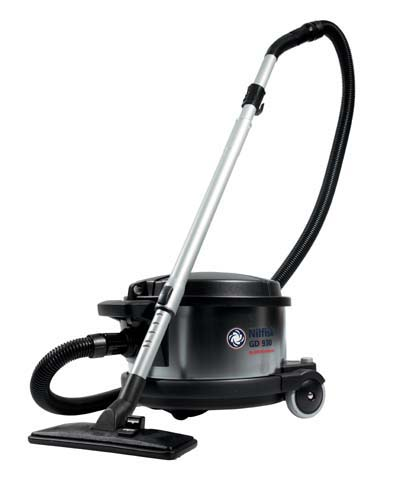

Gold Standard (Most Expensive) |
|
Externally Vented Central VacuumAir Quality Advantages :
Bags are recommended for Asthmatics because dust is contained when throwing out full bags A similar level of cleaning can be achieved with a central vacuum located outside the living envelope (such as in a garage). American Lung Association recommends an Externally Vented Central Vacuum |
|
Silver Standard (Cheapest) |
|
Externally Vented Shop Vacuum
This could be the cheapest solution. Use a shop vacuum with an external vent port (also known as a blower).
Connect the vent port to an appropriate flexible tube, and when vacuuming place the
tube outside the window.
|
|
Bronze Standard (Medium price) |

Nilfisk GD930 |
Medical / Remediation Grade HEPA Vacuum
This is the closest to a conventional vacuum.
|
|
Lower Standards |
|
Conventional Consumer Grade Vacuum
I do not recommend consumer grade vacuums, particularly where people have Asthma or other respiratory complaints.
The additional complexity of these parts makes cleaning and servicing the vacuum itself more difficult.
|
|